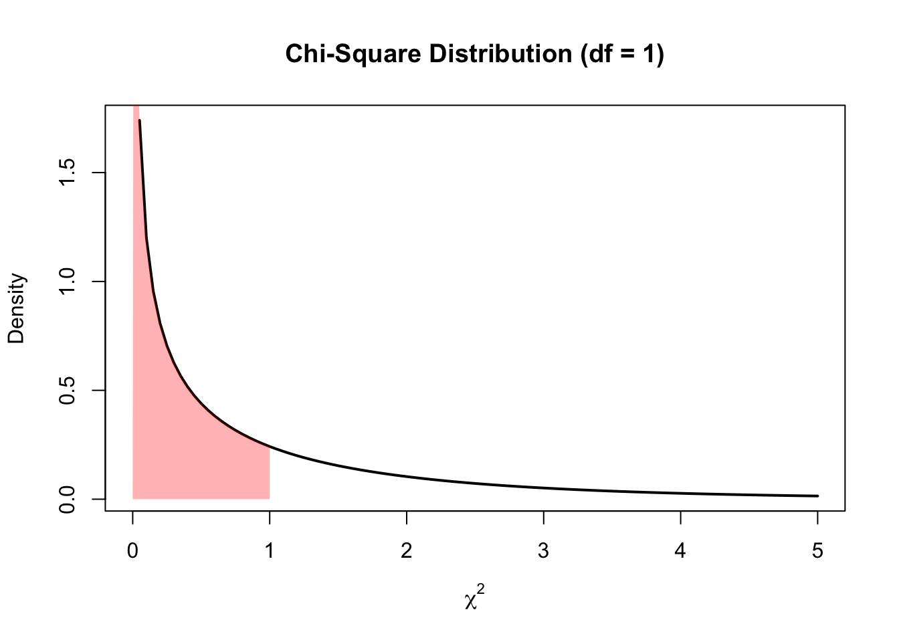

Contingency (R)
Red means that the page does not exist yet
Orange means that the page is started
In this website you can choose to expand or shrink the page to match the level of understanding you want.
- If you do not expand any (green) subsections then you will only see the most superficial level of description about the statistics. If you expand the green subsections you will get details that are required to complete the tests, but perhaps not all the explanations for why the statistics work.
- If you expand the orange subsections you will also see some explanations that will give you a more complete understanding. If you are completing MSc-level statistics you would be expected to understand all the orange subsections.
- Red subsections will go deeper than what is expected at MSc level, such as testing higher level concepts.
Imagine you want to estimate if males or females are more likely to go into certain professions. We could start by looking at a psychology department and analysing the number of female and male lecturers (i.e. frequency). Let’s imagine a department from the 1953, in which there were 5 female and 50 male lecturers, which now in 2023 has 50 female and 50 male lecturers. Whilst we can see that the ratio is more even now than it was in the 1953, but can we quantify how strong the effect of time is, and how significant the result is (and thus whether we are inclined to assume that the change in this department is representative of a general change in all departments).
To summarise the data, we can create a contingency table:
| 1953 | 2023 | Total | |
|---|---|---|---|
| Female | 5 (a) | 50 (b) | 55 (e) |
| Male | 50 (c) | 50 (d) | 100 (f) |
| Total | 55 (g) | 100 (h) | 155 |
(a), (b), (c) and (d) are references for specific cells and will be used for calculations below.
The above table visualises how contingent the ratio of female to male staff numbers are on the year.
There are a few statistics we can use to capture the size and/or significance of contingency effects:
Phi \(\phi\) can be used to summarise the strength of association between variables if you have only 2 levels in each condition. It gives you a value between 0 (no association) and 1 (perfect association), i.e. is the year a perfect predictor of female to male ratio
Chi-Squared \(\chi^2\) analyses capture how significant the contingency is, e.g. is there significant evidence that the male to female ratio
Cramer’s \(V\) can be used to summarise the strength of association even if you have more than 2 levels in each condition. It gives you a value between 0 (no association) and 1 (perfect association). \(V\) will be the same as \(\phi\) (e.g. when analysing 2 X 2 data), and is based on \(\chi^2\).
Note that Phi \(\phi\) and Cramer’s \(V\) are similar to Pearson/Spearman \(r\) correlation coefficients, in that they convey the strength of an association. However, whilst \(r\) tells you both the direction of an association and the strength of it, the direction of \(\phi\) is difficult to interpret (see below) and \(V\) is not directional.
Let’s now use the above example to go through the calculations for \(\phi\), \(\chi^2\) and \(V\)
Phi \(\phi\)
To capture the strength of the association between 2 categorical variables that have 2 levels each we can use the following formula:
\[ \phi = \frac{a * d - b * c}{\sqrt{(e * f * g * h)}} \]
For our example above, we get:
\[ \frac{females_{1953} * males_{2023} - females_{2023} * males_{1953}}{\sqrt{females * males * staff_{1953} * staff_{2023}}} \]
The top half of our formula allows us to capture how much of an interaction there is between sex and year by multiplying opposites and then comparing the difference. If there is not much difference between these opposites, it suggests there isn’t an interaction. If you think there is no association between your categorical variables, then you would expect that there would be a similar ratio of females to males between 1953 and 2023, perhaps something like:
| 1953 | 2023 | Total | |
|---|---|---|---|
| Female | 5 (a) | 10 (b) | 15 (e) |
| Male | 50 (c) | 100 (d) | 150 (f) |
| Total | 55 (g) | 110 (h) | 165 |
When multiplying females in 1953 with males in 2023 we get \(5 * 100 = 500\)
When multiplying females in 2023 with males in 1953 we get \(10*50 = 500\)
So as these opposites aren’t very different, there’s no interaction (\(500 - 500 = 0\)).
Let’s try to crystalise how this comparison of opposites looks when the ratios are reversed, so that 0% of staff are female in 1953, and 0% of staff are male in 2023:
| 1953 | 2023 | Total | |
|---|---|---|---|
| Female | 0 (a) | 100 (b) | 100 (e) |
| Male | 50 (c) | 0 (d) | 50 (f) |
| Total | 50 (g) | 100 (h) | 150 |
When multiplying females in 1953 with males in 2023 we get \(0 * 0 = 0\)
When multiplying females in 2023 with males in 1953 we get \(100*50 = 5000\)
These opposites seem very different as \(5000 - 0 = 5000\), but we need to capture the scale of what a value would be if there is a perfect association:
\[ \sqrt{females * males * staff_{1953} * staff_{2023}} = \sqrt{100 * 50 * 50* 100} = \sqrt{25000000} = 5000 \]
As \(5000/5000 = 1\) we can say that there’s a perfect association between time and sex in staff numbers.
Note that it’s only possible to get a \(\phi\) of 1 or -1 if you have 2 diagonal cells with zero in them. This is because a perfect association between your variables would require that data points are always associated with one combination or its opposite (i.e. being male in 1953 or female in 2023), otherwise that data point is not explained by the association.
Now that we’ve gone through the extreme examples, let’s have a look at how strong the association is between sex and time in the original example data
| 1953 | 2023 | Total | |
|---|---|---|---|
| Female | 5 (a) | 50 (b) | 55 (e) |
| Male | 50 (c) | 50 (d) | 100 (f) |
| Total | 55 (g) | 100 (h) | 155 |
library(psych)
# table above in a matrix
contingency_data <- matrix(
data = c(5,50,50,50),
nrow = 2,
ncol = 2
)
# manual calculation using the formula above
(
# a * d
contingency_data[1,1] * contingency_data[2,2] -
# b * c
contingency_data[1,2] * contingency_data[2,1]
)/sqrt(
# e * f * g * h
sum(contingency_data[1,]) *
sum(contingency_data[2,]) *
sum(contingency_data[,1]) *
sum(contingency_data[,2])
)[1] -0.4090909# using psych package
phi(contingency_data, digits = 7)[1] -0.4090909So we now have captured the size of the effect, let’s look at whether we can capture how significant the effect is by using Chi-squared \(\chi^2\) analyses:
Chi-squared \(\chi^2\)
Chi-squared tests allow us to compare our observed frequencies to what frequencies you would expect if the null hypothesis is true, i.e. if there is no association between your categorical variables. We already have our observed data:
| Observed | 1953 | 2023 | Total |
|---|---|---|---|
| Female | 5 (a) | 50 (b) | 55 (e) |
| Male | 50 (c) | 50 (d) | 100 (f) |
| Total | 55 (g) | 100 (h) | 155 (i) |
But now we need to calculate the expected data if the null hypothesis is true. We would expect that the number of females in 1953 is
\[ females1953_{expected} = \frac{females * Staff_{1953}}{Total} \]
In case you’re not convinced, we can restructure the above formula to make it a bit clearer
If you know how many females there are total, then you want to work out what proportion you should expect in 1953 compared to 2023. If the null hypothesis is correct, that the ratio of females to males should not change between years, then the number of females in 1953 vs. 2023 should reflect the ratio of 1953 to 2023 generally:
\[ staffProportion = \frac{Staff_{1953}}{Staff_{1953} + Staff_{2023}} \]
Then you apply this proportion to females to estimate how many you expect in 1953:
\[ females1953_{expected} = females * staffProportion \]
Bringing everything above together (\(fem\) = \(females\)):
\[ fem1953_{exp} = fem * staffProp = fem * \frac{Staff_{1953}}{Staff_{1953} + Staff_{2023}} = females * \frac{Staff_{1953}}{Total} = \frac{fem * Staff_{1953}}{Total} \]
Using the above formula, let’s estimate all four cells
Females in 1953 = \(\frac{females * Staff_{1953}}{Total} = \frac{55 * 55}{155} = 19.51613\)
Males in 1953 = \(\frac{males * Staff_{1953}}{Total} = \frac{100 * 55}{155} = 35.48387\)
Females in 2023 = \(\frac{females * Staff_{2023}}{Total} = \frac{55 * 100}{155} = 35.48387\)
Males in 2023 = \(\frac{males * Staff_{2023}}{Total} = \frac{100 * 100}{155} = 64.51613\)
| Expected | 1953 | 2023 | Total |
|---|---|---|---|
| Female | 19.51613 (a) | 35.48387 (b) | 55 (e) |
| Male | 35.48387 (c) | 64.51613 (d) | 100 (f) |
| Total | 55 (g) | 100 (h) | 155 (i) |
Now that we’ve calculated the expected values for each cell, we can compare our observed values against the expected values and square the difference:
| Observed vs. Expected | 1953 | 2023 | Total |
|---|---|---|---|
| Female | \((5 - 19.51613)^2\) = 210.7180302 | \((50 - 35.48387)^2 =\) 210.7180302 | 55 |
| Male | \((50 -35.48387)^2\) = 210.7180302 | \((50 - 64.51613)^2 =\) 210.7180302 | 100 |
| Total | 55 | 100 | 155 |
The \(\chi^2\) value is the sum of these squared divided by the expected frequency:
\[ \chi^2 = \sum\frac{(O_i - E_i)^2}{E_i} \]
which in our case is
\[ \frac{210.7180302}{19.51613} + \frac{210.7180302}{35.48387} + \frac{210.7180302}{35.48387} + \frac{210.7180302}{64.51613} = 25.94009 \]
Now that we have a score, we need to calculate a p-value from it using an appropriate chi-square distribution. The distribution we draw will depend on degrees of freedom (this link explains the concept, but not how it changes the distribution shape). Whilst greater degrees of freedom normally results in a narrower distribution in which test statistics become more significant (see t-distributions for an example), \(\chi^2\) distribution shapes change depending on the degrees of freedom. For example, if there’s only 1 degree of freedom, the \(\chi^2\) distribution is one sided:
curve(dchisq(x, df = 1), from = 0, to = 5,xlab = expression(chi^2))However, if there are 3 (or more) degrees of freedom it becomes a curve:
curve(dchisq(x, df = 3), from = 0, to = 40,xlab = expression(chi^2))
Ultimately, you are still trying to work out the likelihood of achieving your chi-square score or higher by calculating the area under the curve. The degrees of freedom of freedom are calculated as follows:
\[ df = (rows - 1) * (columns - 1) \]
So in our case the degrees of freedom are:
\[ df = (rows - 1) * (columns - 1) = (2 - 1) * (2 - 1) = 1 \]
We calculated the \(\chi^2\) as 25.94, so to estimate how significant the result is, we use area under the curve to capture how likely it is to get a \(\chi^2\) value of 25.94 and above:
this_chi_2 = 25.94
#create density curve
curve(dchisq(x, df = 1), from = 0, to = 30,
main = 'Chi-Square Distribution (df = 1)',
ylab = 'Density',
lwd = 2, xlab = expression(chi^2))
#create vector of x values
x_vector <- seq(this_chi_2, 30,.01)
#create vector of chi-square density values
p_vector <- dchisq(x_vector, df = 1)
#fill in portion of the density plot from 0 to 40
polygon(c(x_vector, rev(x_vector)), c(p_vector, rep(0, length(p_vector))),
col = adjustcolor('red', alpha=0.3), border = NA)The area under the curve is imperceptible because it is so small. Let’s zoom in to the 20-30 range on the x-axis:
this_chi_2 = 25.94
#create density curve
curve(dchisq(x, df = 1), from = 20, to = 30,
main = 'Chi-Square Distribution (df = 1)',
ylab = 'Density',
lwd = 2, xlab = expression(chi^2))
#create vector of x values
x_vector <- seq(this_chi_2, 30,.01)
#create vector of chi-square density values
p_vector <- dchisq(x_vector, df = 1)
#fill in portion of the density plot from 0 to 40
polygon(c(x_vector, rev(x_vector)), c(p_vector, rep(0, length(p_vector))),
col = adjustcolor('red', alpha=0.3), border = NA)Now we can see that the possibility of getting a \(\chi^2\) of 25.94 or above is very unlikely, and so our result is significant. How significant? Let’s take a shortcut and use a function to confirm we calculated the \(\chi^2\) correctly and what area under the curve is reflected above (and thus what the p-value is):
options(scipen = 999)
sex_year_table = rbind(c(5, 50), c(50 ,50))
dimnames(sex_year_table) <- list(
sex = c("Female","Male"),
year = c(1953, 2023)
)
# turning off correction
chisq.test(sex_year_table,correct = F)
Pearson's Chi-squared test
data: sex_year_table
X-squared = 25.94, df = 1, p-value = 0.0000003522The p-value is 0.0000004, indicating that \(\chi^2\) values of 25.94 and above take 0.0000004 of the area under the curve. This provides very significant evidence that there’s an association between time and the ratio of females:males.
When looking up \(\chi^2\) distributions, be aware that there there’s a difference between a probability density function like we used above, and a cumulative distribution function:
curve(pchisq(x, df = 1), from = 0, to = 5,xlab = expression(chi^2))A cumulative distribution visualises the likelihood of a \(\chi^2\) value and below as the y-axis for any individual \(\chi^2\) value. It has already added up the cumulative probabilities for the lower \(\chi^2\) values.
To illustrate this concept, let’s evaluate the likelihood of getting a \(\chi^2\) of 1 or less. Let’s use the probability density function to visualise area under the curve for this:
this_chi_2 = 1
#create density curve
curve(dchisq(x, df = 1), from = 0, to = 5,
main = 'Chi-Square Distribution (df = 1)',
ylab = 'Density',
lwd = 2, xlab = expression(chi^2))
#create vector of x values
x_vector <- seq(0, this_chi_2,.01)
#create vector of chi-square density values
p_vector <- dchisq(x_vector, df = 1)
#fill in portion of the density plot from 0 to 40
polygon(c(x_vector, rev(x_vector)), c(p_vector, rep(0, length(p_vector))),
col = adjustcolor('red', alpha=0.3), border = NA)
We can see that this range of 0 to 1 covers a large proportion of the area under the curve. We can see exactly how much within the following cumulative probability function:
curve(pchisq(x, df = 1), from = 0, to = 5,xlab = expression(chi^2))
abline(h = pchisq(1, df=1), v = 1, lty = 1, col = "red")So now you can see that the area under the curve from 0 to 1 for the probability density function is 0.6826895 of the total area under the curve. The probability of getting a \(\chi^2\) greater than 1 is thus 1 - 0.6826895 which is 0.3173105.
Cramer’s V
As mentioned earler, Cramer’s \(V\) gives you the same results as \(\phi\), but can also be used to summarise the strength of association for designs more complicated than 2 x 2. Cramer’s \(V\) can be calculated as follows:
\[ V^2 = \sqrt{\frac{\chi^2/n}{min(cols-1,rows-1)}} \]
Let’s confirm that it gives the same value as \(\phi\):
# phi calcultion from above
phi(contingency_data, digits = 7)[1] -0.4090909# manual calculation of Cramer
sqrt((25.94009/155)/1)[1] 0.409091# cramer function
library(confintr)
cramersv(contingency_data)[1] 0.4090909You may notice that \(\phi\) was negative whereas Cramer’s V is positive. This is because \(\chi^2\) values are always positive (as they are calculated based off squared values), and so Cramer’s \(V\) is positive because it’s based on \(\chi^2\) values. It’s not intuitive to identify the direction of a finding based on it being a positive or negative \(\phi\), so it can be helpful to also include other summaries of the findings direction as described below.
Other metrics for 2 x 2 contingency data
We would like to capture the direction of our findings for the following data:
| 1953 | 2023 | Total | |
|---|---|---|---|
| Female | 5 (a) | 50 (b) | 55 (e) |
| Male | 50 (c) | 50 (d) | 100 (f) |
| Total | 55 (g) | 100 (h) | 155 |
Odds Ratio
If we want to summarise how much the female:male ratio has shifted between years, we can use an odds ratio
\[ \frac{a/c}{b/d} = \frac{female_{1953}/male_{1953}}{female_{2023}/male_{2023}} \]
A value of 1 would reflect no association between sex and year. A number above 1 would reflect a relatively higher number of females to males in 1953 compared to 2023. A number below would reflect a relatively higher number of females to males in 2023 compared to 1953. We can see from the above table that the ratio of females to males is higher in 2023 than 1953, so let’s see if the odds-ratio reflects this:
\[ \frac{a/c}{b/d} = \frac{female_{1953}/male_{1953}}{female_{2023}/male_{2023}} = \frac{5/50}{50/50} = .1 \]
Groovy, the odds ratio gives a relatively intuitive gauge of how big the differences in ratios is between years.
Risk Ratio
The risk ratio is similar conceptually to odds ratio, but compares proportions. In our case, it would look at the proportion of females within each year group and then compare them:
\[ \frac{a/(a+c)}{b/(b+c)} = \frac{female_{1953}/(male_{1953} + female_{1953})}{female_{2023}/(male_{2023} + female_{2023})} = \frac{propFemale_{1953}}{propFemale_{2023}} = \frac{5/55}{50/100} = \frac{10}{55} = .182 \]
As with the odds ratio above, a risk ratio below 1 would suggest that the proportion of females is lower in 1953 than 2023, and a risk ratio above 1 would suggest that the proportion of females is higher in 1953 than 2023.
What to do if you have 5 or less in one of your cells
There is an argument that if there is 5 or less in any cell in a contingency table you should not use Chi-Square without a correction as there’s a concern of an inflated risk of false-positives without this correction (we won’t be going into the maths behind this risk). We will go through the options of using a Yates Continuity Correction or a Fisher’s Exact test to deal with this situation.
Yates Continuity Correction
In Yates Continuity Correction you subtract .5 from each cell to reduce the final \(\chi^2\) value:
\[ \chi^2_{Yates} = \sum\frac{(abs(O_i - E_i)-.5)^2}{E_i} \]
Let’s compare a manual calculation of a Yates corrected \(\chi^2\) value to one using a function:
# manual calculation
(((abs(5 - 19.51613)-.5)^2)/19.51613) +
(((abs(50 - 35.48387)-.5)^2)/35.48387) +
(((abs(50 - 35.48387)-.5)^2)/35.48387) +
(((abs(50 - 64.51613)-.5)^2)/64.51613)[1] 24.18388# using function
sex_year_table = rbind(c(5, 50), c(50 ,50))
dimnames(sex_year_table) <- list(
sex = c("Female","Male"),
year = c(1953, 2023)
)
# turning off correction
chisq.test(sex_year_table,correct = T)
Pearson's Chi-squared test with Yates' continuity correction
data: sex_year_table
X-squared = 24.184, df = 1, p-value = 0.0000008756You may have noticed that we have turned correct (i.e. apply Yates Correction) to T for TRUE. Functions will sometimes automatically apply this correction, so it’s worth checking your output carefully to see if this has happened.
Fisher’s Exact Test
Whilst \(\chi^2\) analysis p-values are based on an approximation based on a probability density function distribution of \(\chi^2\) values, Fisher’s Exact Test calculates exactly how likely it is to get an outcome for each permutation:
\[ \frac{(a+b)!*(c+d)!*(a+c)!*(b+d)!}{a!*b!*c!*d!*n!} \]
Importantly, you must repeat this calculation for each more extreme value, and add together all outcomes to get the p-value that reflects the likelihood of getting this contingency or a more extreme one. To get a more extreme outcome look at cell (a) and judge whether increasing or reducing its value by 1 is more extreme. If you remove 1 from (a) you need to adjust all the other columns to maintain the row and column totals, for example:
Original table
| 1953 | 2023 | Total | |
|---|---|---|---|
| Female | 5 (a) | 50 (b) | 55 (e) |
| Male | 50 (c) | 50 (d) | 100 (f) |
| Total | 55 (g) | 100 (h) | 155 (n) |
Slightly more extreme table
| 1953 | 2023 | Total | |
|---|---|---|---|
| Female | 4 (a) | 51 (b) | 55 (e) |
| Male | 51 (c) | 49 (d) | 100 (f) |
| Total | 55 (g) | 100 (h) | 155 (n) |
Then run the calculation again and add it to your previous p-value, and continue until you reach the maximum possible value in a (i.e. it’s no lower than 0 or no higher than (e) or (g)). Note that this will be a 1-tailed hypothesis and you will need to reflect whether it is going against your hypothesis or not. In our case, it is consistent with our hypothesis that females are under-represented in 1953, so calculating all cases with less representation of females in 1953 is testing the significance of this hypothesis.
# due to massive numbers using Brobdingnag package to avoid numbers becoming infinite
library(Brobdingnag)Loading required package: Matrix
Attaching package: 'Brobdingnag'The following objects are masked from 'package:Matrix':
diag, tThe following objects are masked from 'package:base':
diag, tas.numeric(
(
as.brob(factorial(55)) *
as.brob(factorial(100)) *
as.brob(factorial(55)) *
as.brob(factorial(100))
) / (
as.brob(factorial(5)) *
as.brob(factorial(50)) *
as.brob(factorial(50)) *
as.brob(factorial(50)) *
as.brob(factorial(155))
)
) +
as.numeric(
(
as.brob(factorial(55)) *
as.brob(factorial(100)) *
as.brob(factorial(55)) *
as.brob(factorial(100))
) / (
as.brob(factorial(4)) *
as.brob(factorial(51)) *
as.brob(factorial(51)) *
as.brob(factorial(49)) *
as.brob(factorial(155))
)
) +
as.numeric(
(
as.brob(factorial(55)) *
as.brob(factorial(100)) *
as.brob(factorial(55)) *
as.brob(factorial(100))
) / (
as.brob(factorial(3)) *
as.brob(factorial(52)) *
as.brob(factorial(52)) *
as.brob(factorial(48)) *
as.brob(factorial(155))
)
) +
as.numeric(
(
as.brob(factorial(55)) *
as.brob(factorial(100)) *
as.brob(factorial(55)) *
as.brob(factorial(100))
) / (
as.brob(factorial(2)) *
as.brob(factorial(53)) *
as.brob(factorial(53)) *
as.brob(factorial(47)) *
as.brob(factorial(155))
)
) +
as.numeric(
(
as.brob(factorial(55)) *
as.brob(factorial(100)) *
as.brob(factorial(55)) *
as.brob(factorial(100))
) / (
as.brob(factorial(1)) *
as.brob(factorial(54)) *
as.brob(factorial(54)) *
as.brob(factorial(46)) *
as.brob(factorial(155))
)
) +
as.numeric(
(
as.brob(factorial(55)) *
as.brob(factorial(100)) *
as.brob(factorial(55)) *
as.brob(factorial(100))
) / (
as.brob(factorial(0)) *
as.brob(factorial(55)) *
as.brob(factorial(55)) *
as.brob(factorial(45)) *
as.brob(factorial(155))
)
)[1] 0.00000009582059# 0.00000009582
# compare with package:
fisher.test(sex_year_table, alternative = 'less')
Fisher's Exact Test for Count Data
data: sex_year_table
p-value = 0.00000009582
alternative hypothesis: true odds ratio is less than 1
95 percent confidence interval:
0.0000000 0.2471546
sample estimates:
odds ratio
0.1013897 Most psychology textbooks don’t address the following, so you can proceed to later pages without it.
Why/How Fisher’s Exact Test works
The above formula is a bit dense, so let’s focus on a simpler example to explain the mathematics behind it.
Permutations on the probability page describes ways of calculating how many unique permutations there are in situations like this. Let’s apply an explanation of Fisher’s test from Chapter 13 of (Hoffman 2015) to explain how the maths works for our current example.
To start with, let’s work out how many unique permutations of females vs. males we could have within 1953. Using the general formula:
\[ \frac{(females_{1953} + males_{1953})!}{females_{1953}! * males_{1953}!} = \frac{55!}{5! * 50!} = 3478761 \]
Now let’s work out the same for 2023:
\[ \frac{(females_{2023} + males_{2023})!}{females_{2023}! * males_{2023}!} = \frac{100!}{50! * 50!} = 100891344545564518731063754752 \]
Now we can multiply the combinations from 1953 to those from 2023, as we can apply each combination from one year to any combination from the other year, to get 350976874642672723890193854162272256.
Now that we’ve counted every possible valid permutation with our data (i.e. with the correct number of males and females in their respective years), we need to divide it by the total number of permutations that could exist regardless of year (as we have so far been focusing within years). With 55 females and 100 males we get the following:
\[ \frac{(females + males)!}{females! * males!} = \frac{(55+100)!}{55! * 100!} = 4041787069361244292202808568245231453995008 \]
So the likelihood of this specific outcome is:
\[ \frac{350976874642672723890193854162272256}{4041787069361244292202808568245231453995008} = 0.00000008683705 \]
Not super likely. Let’s compare this conceptual calculation with the above formula, and then use algebra to show that they are the same. Let’s check if we get the same value first:
as.numeric(
(
as.brob(factorial(55)) *
as.brob(factorial(100)) *
as.brob(factorial(55)) *
as.brob(factorial(100))
) / (
as.brob(factorial(5)) *
as.brob(factorial(50)) *
as.brob(factorial(50)) *
as.brob(factorial(50)) *
as.brob(factorial(155))
)
)[1] 0.00000008683705… and now use algebra to show why, with reference to the table
| 1953 | 2023 | Total | |
|---|---|---|---|
| Female | 5 (a) | 50 (b) | 55 (e) |
| Male | 50 (c) | 50 (d) | 100 (f) |
| Total | 55 (g) | 100 (h) | 155 (n) |
\[ \frac{perms_{1953}*perms_{2023}}{permsAcrossYears} = \frac{(\frac{g!}{a!*c!})*(\frac{h!}{b!*d!})}{\frac{n!}{e!*f!}} = \frac{(\frac{g! * h!}{a! * b! * c! * d!})}{(\frac{n!}{e! * f!})} = \frac{(\frac{e!*f!*g!*h!}{a!*b!*c!*d})}{n!}= \frac{(a+b)!*(c+d)!*(a+c)!*(b+d)!}{a!*b!*c!*d!*n!} \]
G-test
There’s growing use of G-tests in place of \(\chi^2\) tests, as they are more robust when the observed numbers are 2 times greater than the expected number. Otherwise they generally come to the same conclusion as \(\chi^2\) tests. The formula for g-tests is:
\[ G = 2 * \sum O_i * ln(\frac{O_i}{E_i}) \]
Lets compare the outputs for a g-test on our data to a \(\chi^2\) test:
library(AMR)
Attaching package: 'AMR'The following objects are masked from 'package:confintr':
kurtosis, skewnessThe following object is masked from 'package:psych':
pcag.test(contingency_data)Warning in g.test(contingency_data): `fisher.test()` is always more reliable
for 2x2 tables and although much slower, often only takes seconds.
G-test of independence
data: contingency_data
X-squared = 29.482, p-value = 0.00000005645chisq.test(contingency_data)
Pearson's Chi-squared test with Yates' continuity correction
data: contingency_data
X-squared = 24.184, df = 1, p-value = 0.0000008756Question 1
Will Cramer’s V give the same value as Phi?
Question 2
Chi Square tests tell you…